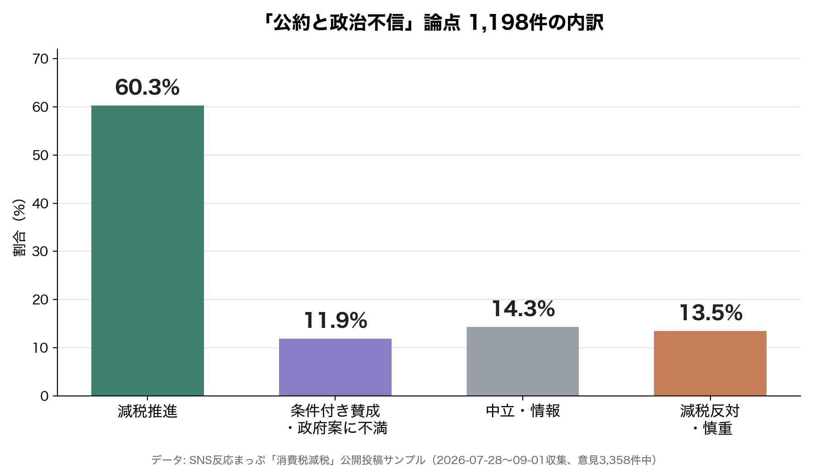

食料品の税率を1%に下げ、財源は特例公債に頼らず、実施は2027年4月から2年間。消費税減税は、もうそこまで決まっています。それなのに、SNSで交わされている言葉の多くは、税率でも財源でもありませんでした。
※無作為抽出の世論調査ではなく、SNS公開投稿のサンプル分析です（詳細は記事末）。
1,198件のうち、消費税減税を推す側に分類された投稿は60.3%でした。数字だけを見れば、公約に対する評価はおおむね前向き、という話になります。
中身を読むと、様子が違います。

減税を推す投稿の多くが理由に挙げていたのは、税率の下げ幅でも、対象品目の広さでもありませんでした。財務省が減税を渋っているという不信や、他の法案を優先する政権への不満を挙げる声が目立ちます。
𝕏減税に慎重な側も、形は同じでした。政策の効果より、決断そのものを「人気取り」と見るか、公約を煽った野党の責任と見るか。評価の軸は、税率の妥当性ではなく、誰の判断を信じるかに置かれていました。
𝕏 →論点別の内訳と実際の投稿をSNS反応まっぷで見るもっとも読み応えがあったのは、「条件付き賛成・政府案に不満」に分類された143件でした。減税そのものには賛成しながら、決まった中身への不満を書いている一群です。
公約を理由に投票したのに、実際に決まったのは食料品だけの1%だった。当初語られていた税率から後退した。他党の案に近いものになった——理由はさまざまですが、共通していたのは「約束と違う」という失望でした。
𝕏政策の設計を評価しているのではなく、約束が守られたかどうかを採点している。賛成・反対という分類の内側で、実際に測られていたのは別のものでした。
1,198件のうち、高市首相の名前が挙がった投稿を数えると、4件に1件を超えていました。税率の数字より、首相の名前のほうが先に出てくる会話だったということです。
2025年5月、当時の野党の一つが食料品の税負担軽減を提言しました。2026年8月5日、政府は2年間・税率1%・給付の組み合わせという基本方針を閣議決定します。そして2026年9月15日、政府はさらに具体的な「大綱」を閣議決定しました。
期間は2027年4月1日から2029年3月31日。税率は国税0.78%と地方消費税0.22%を合わせた1%。対象は現行の軽減税率品目のままで、広げてはいません。あわせて、中低所得の現役勤労者向けに「就業者負担軽減支援金」という現金給付の制度設計まで固まりました。
公約から実施の詳細まで、4カ月足らずでここまで進んだ政策は、そう多くありません。
この動きの速さを後押ししたのが、政治そのものへの不信だと考えられます。内閣府の世論調査では、国の政策に自分の意見が反映されていないと感じる人が71.3%にのぼります。物価が悪い方向に向かっていると答えた人はさらに多く、7割を超えました。「早く決めてほしい」という圧力は、税率の妥当性からではなく、この不信の大きさから生まれていた可能性があります。
→政治不信・公約の論点で語られた投稿をSNS反応まっぷで見る政府が制度の詳細まで決めたのに対して、SNSの会話は「誰を信じるか」の段階にとどまっていました。対象範囲は広がったのか、税率1%に効果はあるのか、支援金は誰が受け取れるのか——そうした中身への言及は、集めた投稿の中では少数でした。
ここには時期のずれもあります。今回集計した投稿は、大綱が決まった9月15日より前のものが中心です。就業者負担軽減支援金という名前も、税率1%という具体的な数字も、投稿された時点ではまだ固まっていませんでした。中身への反応は、これから増えていくはずです。
次回からは、その中身を一つずつ見ていきます。対象範囲は本当に広がらないのか、財源の話は何が決まっていて何が決まっていないのか。
→あなたの実感に近い論点に投票して、分布を見る